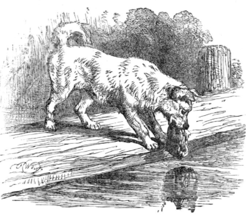

B2 · Stories & Literature
The Text
Play the audio and follow along, then read it again on your own. Hover over a highlighted word to see what it means.
Listen & Read
What We Tell Ourselves
Two fables of Aesop about wanting something, and the story you invent once you cannot have it.
A fable is a very short story with an animal in it and a sentence at the end telling you what it meant. The form is more than two thousand years old, the collection is attributed to Aesop, and almost nothing about him is known — he may not have existed, and the stories certainly did not all come from one person. What survives is the shape: a situation, a decision, a consequence, and a line you cannot argue with.
Here are two about the same human habit.
The Fox and the Grapes
A fox one day spied a beautiful bunch of ripe grapes hanging from a vine trained along the branches of a tree. The grapes seemed ready to burst with juice, and the fox's mouth watered as he gazed longingly at them.
The bunch hung from a high branch, and the fox had to jump for it. The first time he jumped he missed it by a long way. So he walked off a short distance and took a running leap at it, only to fall short once more. Again and again he tried, but in vain.
At last he sat down and looked at the grapes with disgust.
“What a fool I am,” he said. “Here I am wearing myself out to get a bunch of sour grapes that are not worth the effort.” And off he walked, very scornfully.
There are many who pretend to despise what is beyond their reach.
The Dog and His Reflection
A dog, to whom the butcher had thrown a piece of meat, was hurrying home with his prize as fast as he could go. As he crossed a narrow footbridge, he happened to look down and saw himself reflected in the quiet water as if in a mirror. But the greedy dog thought he saw another dog carrying a piece of meat much bigger than his own.
If he had stopped to think, he would have known better. Instead of thinking, he dropped his own meat and sprang at the dog in the river — and found himself swimming for his life to reach the bank. At last he scrambled out, and as he stood there thinking about the good meat he had lost, he realised what a stupid dog he had been.
It is very foolish to be greedy.

The two fables are usually read as being about different things: the first about pride, the second about greed. They are closer than that. In both, an animal loses something real to something imagined — the fox loses the memory of wanting the grapes, which he replaces with contempt he does not feel, and the dog loses actual meat to a reflection of it. Both stories are about a false picture beating a true one.
The fox has given English a phrase. When somebody dismisses what they wanted and failed to get — the job, the invitation, the house — we call it sour grapes, and the expression still carries the fable's exact meaning: not that the thing was bad, but that the person needed it to have been.
Vocabulary
- fable — a very short story, usually with animals, ending in a stated moral
- to attribute to — to say something was made by a particular person
- to spy — to catch sight of something, often at a distance
- ripe — ready to be eaten
- vine — the climbing plant that grapes grow on
- to burst — to break open from what is inside
- one's mouth waters — saliva forms because food looks good
- longingly — with strong, unsatisfied desire
- to fall short — to not reach far enough
- in vain — without success, after real effort
- to wear oneself out — to exhaust yourself
- sour — sharp and unpleasant in taste, like an unripe fruit
- scornfully — in a way that shows open contempt
- to despise — to look down on with dislike
- beyond one's reach — impossible to obtain
- butcher — somebody who cuts and sells meat
- prize — something won or gained and valued
- footbridge — a narrow bridge for people on foot
- greedy — wanting more than you need
- to spring at — to jump suddenly towards
- bank — the land at the edge of a river
- to scramble out — to climb out with difficulty
- contempt — the feeling that something is worthless
- sour grapes — pretending to scorn what you wanted and could not get
Interactive Exercises
Practice
Complete each exercise, then click Submit to see your score and an explanation for every answer.
Speaking & Writing
Discussion
There are no right answers here — use these to practice speaking, or write a short answer to each.
- “Not that the thing was bad, but that the person needed it to have been.” When have you seen somebody do that — or done it yourself?
- The dog loses real meat to a reflection. What is the modern version of that?
- A fable states its moral outright. Does that make it weaker than a story that leaves you to work it out?
- Does knowing the phrase “sour grapes” change how you hear somebody dismissing a job they did not get?
- Write a fable of your own in about 150 words: an animal, a decision, a consequence, and one line at the end.